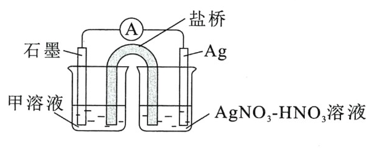

<meta data-alternate="https://freshmark.sunisalex.org/en/" data-article="true" data-canonical="https://freshmark.sunisalex.org/posts/chemistry/dxyz-compounds-experiments/" data-description="两道围绕铁的实验探究题：2024 北京高考 19 题，Cu、Zn、Mg 能否把 Fe³⁺ 还原为 Fe；以及过量铁粉还原 Ag⁺ 时，溶液中的 Fe³⁺ 从何而来。整理了设计实验的两条路径：在原溶液中直接或间接证明，或用类比溶液做缺位对照。离子检验牢记“取上清液”，平衡移动按“平衡→变化→移动→现象”作答。" data-freshmark-page data-title="[DXYZ]元素化合物实验探究(I) — Freshmark"><main><header class="container article-header"><a href="/" class="back-link">← 返回全部文章</a><p class="eyebrow article-subject">化学</p><h1>[DXYZ]元素化合物实验探究(I)</h1><p class="article-dek">两道围绕铁的实验探究题：2024 北京高考 19 题，Cu、Zn、Mg 能否把 Fe³⁺ 还原为 Fe；以及过量铁粉还原 Ag⁺ 时，溶液中的 Fe³⁺ 从何而来。整理了设计实验的两条路径：在原溶液中直接或间接证明，或用类比溶液做缺位对照。离子检验牢记“取上清液”，平衡移动按“平衡→变化→移动→现象”作答。</p><div class="article-meta"><time datetime="2026-10-17">2026年10月17日</time><span>3 分钟阅读</span><span class="view-count" data-article-view-count hidden>本文访问量 <strong data-article-views></strong></span><a href="index.md" download>下载 Markdown</a><button type="button" class="article-share" data-share-article data-share-text="两道围绕铁的实验探究题：2024 北京高考 19 题，Cu、Zn、Mg 能否把 Fe³⁺ 还原为 Fe；以及过量铁粉还原 Ag⁺ 时，溶液中的 Fe³⁺ 从何而来。整理了设计实验的两条路径：在原溶液中直接或间接证明，或用类比溶液做缺位对照。离子检验牢记“取上清液”，平衡移动按“平衡→变化→移动→现象”作答。" data-share-title="[DXYZ]元素化合物实验探究(I)"><span data-share-label>分享文章</span></button><output aria-live="polite" class="visually-hidden" data-share-status role="status"></output></div></header><div class="article-wrap"><aside class="toc"><div class="toc-head"><p>本文目录</p><button type="button" class="toc-toggle" aria-expanded="false" aria-label="展开或收起目录" data-toc-toggle><span class="toc-toggle-label">目录</span><span class="toc-toggle-icon" aria-hidden="true"></span></button></div><nav aria-label="目录" class="toc-links" data-toc-links><a href="#设计实验" class="toc-level-2">设计实验</a><a href="#原溶液" class="toc-level-3">原溶液</a><a href="#类比溶液" class="toc-level-3">类比溶液</a><a href="#离子检验" class="toc-level-2">离子检验</a></nav></aside><article class="prose"><h2 id="设计实验">设计实验</h2><h3 id="原溶液">原溶液</h3><ul><li>直接证明:检测产物生成</li><li>间接证明:检测反应物减少/耗尽</li></ul><h3 id="类比溶液">类比溶液</h3><ul><li>To be unlocked</li><li>To be unlocked</li><li>缺位实验：<span class="math-expression math-inline" data-math-source="\ce{AgNO3 -&gt; NaNO3}"></span></li></ul><h2 id="离子检验">离子检验</h2><p>牢记“<strong>取上清液</strong>”.</p><p><strong>（2024 北京高考 19）</strong>（14 分）某小组同学向 <span class="math-expression math-inline" data-math-source="\ce{pH}=1"></span>&#32;的 <span class="math-expression math-inline" data-math-source="0.5\ \mathrm{mol\cdot L^{-1}}"></span>&#32;的 <span class="math-expression math-inline" data-math-source="\ce{FeCl3}"></span>&#32;溶液中分别加入过量的 <span class="math-expression math-inline" data-math-source="\ce{Cu}"></span>&#32;粉、<span class="math-expression math-inline" data-math-source="\ce{Zn}"></span>&#32;粉和 <span class="math-expression math-inline" data-math-source="\ce{Mg}"></span>&#32;粉，探究溶液中氧化剂的微粒及其还原产物。</p><p>（1）理论分析</p><p>依据金属活动性顺序，<span class="math-expression math-inline" data-math-source="\ce{Cu}"></span>、<span class="math-expression math-inline" data-math-source="\ce{Zn}"></span>、<span class="math-expression math-inline" data-math-source="\ce{Mg}"></span>&#32;中可将 <span class="math-expression math-inline" data-math-source="\ce{Fe^3+}"></span>&#32;还原为 <span class="math-expression math-inline" data-math-source="\ce{Fe}"></span>&#32;的金属是______。</p><blockquote><p>选取铁前金属:<span class="math-expression math-inline" data-math-source="\ce{Zn},\ce{Mg}"></span>.</p></blockquote><p>（2）实验验证</p><table><thead><tr><th>实验</th><th>金属</th><th>操作、现象及产物</th></tr></thead><tbody><tr><td>I</td><td>过量 <span class="math-expression math-inline" data-math-source="\ce{Cu}"></span></td><td>一段时间后，溶液逐渐变为蓝绿色，固体中未检测到 <span class="math-expression math-inline" data-math-source="\ce{Fe}"></span>&#32;单质</td></tr><tr><td>II</td><td>过量 <span class="math-expression math-inline" data-math-source="\ce{Zn}"></span></td><td>一段时间后有气泡产生，反应缓慢，<span class="math-expression math-inline" data-math-source="\ce{pH}"></span>&#32;逐渐增大，产生了大量红褐色沉淀后，无气泡冒出，此时溶液 <span class="math-expression math-inline" data-math-source="\ce{pH}"></span>&#32;为 3~4，取出固体，固体中未检测到 <span class="math-expression math-inline" data-math-source="\ce{Fe}"></span>&#32;单质</td></tr><tr><td>III</td><td>过量 <span class="math-expression math-inline" data-math-source="\ce{Mg}"></span></td><td>有大量气泡产生，反应剧烈，<span class="math-expression math-inline" data-math-source="\ce{pH}"></span>&#32;逐渐增大，产生了大量红褐色沉淀后，持续产生大量气泡，当溶液 <span class="math-expression math-inline" data-math-source="\ce{pH}"></span>&#32;为 3~4 时，取出固体，固体中检测到 <span class="math-expression math-inline" data-math-source="\ce{Fe}"></span>&#32;单质</td></tr></tbody></table><p>① 分别取实验 I、II、III 中的少量溶液，滴加 <span class="math-expression math-inline" data-math-source="\ce{K3[Fe(CN)6]}"></span>&#32;溶液，证明都有 <span class="math-expression math-inline" data-math-source="\ce{Fe^2+}"></span>&#32;生成，依据的现象是______。</p><blockquote><p>产生蓝色沉淀</p></blockquote><p>② 实验 II、III 都有红褐色沉淀生成，用平衡移动原理解释原因______。</p><blockquote><p>平衡原理四板斧：平衡-&gt;变化-&gt;移动-&gt;现象</p><p><span class="math-expression math-inline" data-math-source="\ce{Fe^3+}"></span>水解方程式为<span class="math-expression math-inline" data-math-source="\ce{Fe^3+ + 3H2O&lt;=&gt; Fe(OH)3 + 3H+}"></span>，加入的<span class="math-expression math-inline" data-math-source="\ce{Mg}"></span>或<span class="math-expression math-inline" data-math-source="\ce{Zn}"></span>会消耗<span class="math-expression math-inline" data-math-source="\ce{H+}"></span>，促进<span class="math-expression math-inline" data-math-source="\ce{Fe^3+}"></span>水解平衡正向移动，使其转化为<span class="math-expression math-inline" data-math-source="\ce{Fe(OH)3}"></span>沉淀</p></blockquote><p>③ 对实验 II 未检测到 <span class="math-expression math-inline" data-math-source="\ce{Fe}"></span>&#32;单质进行分析及探究。</p><p>i. a. 甲认为实验 II 中，当 <span class="math-expression math-inline" data-math-source="\ce{Fe^3+}"></span>、<span class="math-expression math-inline" data-math-source="\ce{H+}"></span>&#32;浓度较大时，即使 <span class="math-expression math-inline" data-math-source="\ce{Zn}"></span>&#32;与 <span class="math-expression math-inline" data-math-source="\ce{Fe^2+}"></span>&#32;反应置换出少量 <span class="math-expression math-inline" data-math-source="\ce{Fe}"></span>，<span class="math-expression math-inline" data-math-source="\ce{Fe}"></span>&#32;也会被 <span class="math-expression math-inline" data-math-source="\ce{Fe^3+}"></span>、<span class="math-expression math-inline" data-math-source="\ce{H+}"></span>&#32;消耗。写出 <span class="math-expression math-inline" data-math-source="\ce{Fe}"></span>&#32;与 <span class="math-expression math-inline" data-math-source="\ce{Fe^3+}"></span>、<span class="math-expression math-inline" data-math-source="\ce{H+}"></span>&#32;反应的离子方程式______。</p><blockquote><p><span class="math-expression math-inline" data-math-source="\ce{Fe + 2Fe^3+ = 3Fe^2+,Fe + 2H^+= Fe^2+ + H2 ^}"></span></p></blockquote><p>b. 乙认为在 <span class="math-expression math-inline" data-math-source="\ce{pH}"></span>&#32;为 3~4 的溶液中即便生成 <span class="math-expression math-inline" data-math-source="\ce{Fe}"></span>&#32;也会被 <span class="math-expression math-inline" data-math-source="\ce{H+}"></span>&#32;消耗。设计实验______（填实验操作和现象），证实了此条件下可忽略 <span class="math-expression math-inline" data-math-source="\ce{H+}"></span>&#32;对 <span class="math-expression math-inline" data-math-source="\ce{Fe}"></span>&#32;的消耗。</p><blockquote><p>Possible Version I(原溶液体系)</p><p>取II反应后的上清液，加入铁粉，无明显变化</p></blockquote><blockquote><p>Possible Version II(类比溶液体系)</p><p>向<span class="math-expression math-inline" data-math-source="\ce{pH}"></span>为3-4的稀盐酸中加铁粉，一段时间后取出少量溶液，滴加 <span class="math-expression math-inline" data-math-source="\ce{K3[Fe(CN)6]}"></span>&#32;溶液，不产生蓝色沉淀</p></blockquote><blockquote><p>Possible Version III(类比溶液体系-<span class="math-expression math-inline" data-math-source="\ce{Fe^3+}"></span>缺位优化版)</p><p>向用稀盐酸调<span class="math-expression math-inline" data-math-source="\ce{pH}"></span>为3-4的<span class="math-expression math-inline" data-math-source="1.5\ \mathrm{mol\cdot L^{-1}} \ce{NaCl}"></span>溶液中加铁粉，一段时间后取出少量溶液，滴加 <span class="math-expression math-inline" data-math-source="\ce{K3[Fe(CN)6]}"></span>&#32;溶液，不产生蓝色沉淀</p></blockquote><p>c. 丙认为产生的红褐色沉淀包裹在 <span class="math-expression math-inline" data-math-source="\ce{Zn}"></span>&#32;粉上，阻碍了 <span class="math-expression math-inline" data-math-source="\ce{Zn}"></span>&#32;与 <span class="math-expression math-inline" data-math-source="\ce{Fe^2+}"></span>&#32;的反应。实验证实了 <span class="math-expression math-inline" data-math-source="\ce{Zn}"></span>&#32;粉被包裹。</p><p>ii. 查阅资料：<span class="math-expression math-inline" data-math-source="0.5\ \mathrm{mol\cdot L^{-1}}"></span>&#32;<span class="math-expression math-inline" data-math-source="\ce{Fe^3+}"></span>&#32;开始沉淀的 <span class="math-expression math-inline" data-math-source="\ce{pH}"></span>&#32;约为 1.2，完全沉淀的 <span class="math-expression math-inline" data-math-source="\ce{pH}"></span>&#32;约为 3。</p><blockquote><p>考虑对已知信息进行充分表征:</p><ul><li><span class="math-expression math-inline" data-math-source="\ce{pH=1,Fe^3+}"></span>大量存在，Fe不存在</li><li><span class="math-expression math-inline" data-math-source="\ce{pH=1.2,Fe^3+ -&gt; Fe(OH)3}"></span>，包裹在<span class="math-expression math-inline" data-math-source="\ce{Zn}"></span>粉上，阻碍<span class="math-expression math-inline" data-math-source="\ce{Zn}"></span>与<span class="math-expression math-inline" data-math-source="\ce{H^+,Fe^2+}"></span>反应</li><li><span class="math-expression math-inline" data-math-source="\ce{pH\in(3,4)}"></span>, <span class="math-expression math-inline" data-math-source="\ce{Fe}"></span>与<span class="math-expression math-inline" data-math-source="\ce{H^+}"></span>不反应</li></ul></blockquote><p>结合 a、b 和 c，重新做实验 II，当溶液 <span class="math-expression math-inline" data-math-source="\ce{pH}"></span>&#32;为 3~4 时，不取出固体，向固-液混合物中持续加入盐酸，控制 <span class="math-expression math-inline" data-math-source="\ce{pH}&lt;1.2"></span>，______（填实验操作和现象），待 <span class="math-expression math-inline" data-math-source="\ce{pH}"></span>&#32;为 3~4 时，取出固体，固体中检测到 <span class="math-expression math-inline" data-math-source="\ce{Fe}"></span>&#32;单质。</p><blockquote><p>控制<span class="math-expression math-inline" data-math-source="\ce{pH}&lt;1.2"></span>,可以让<span class="math-expression math-inline" data-math-source="\ce{Zn}"></span>表面的红褐色沉淀溶解，从而让<span class="math-expression math-inline" data-math-source="\ce{Zn}"></span>得以还原<span class="math-expression math-inline" data-math-source="\ce{Fe^3+,Fe^2+,H^+}"></span>,最后耗尽<span class="math-expression math-inline" data-math-source="\ce{Fe^3+}"></span>，并让<span class="math-expression math-inline" data-math-source="\ce{pH}"></span>上升到3-4，让Fe存在</p><p>Answer: 红褐色沉淀溶解，溶液黄色褪去，<strong>停止加入盐酸</strong>，有气泡产生</p><p>or 加入几滴<span class="math-expression math-inline" data-math-source="\ce{KSCN}"></span>溶液，待溶液红色消失后，停止加入盐酸</p></blockquote><p>（3）对比实验 II 和 III，解释实验 III 的固体中检测到 <span class="math-expression math-inline" data-math-source="\ce{Fe}"></span>&#32;单质的原因______。</p><blockquote><p>Note: 这不是“求异”类题目，应充分分析内外所有原因</p><ul><li>内因:还原性<span class="math-expression math-inline" data-math-source="\ce{Mg&gt;Fe}"></span></li><li>外因:<span class="math-expression math-inline" data-math-source="\ce{Mg}"></span>与<span class="math-expression math-inline" data-math-source="\ce{H^+}"></span>反应剧烈，产生大量气泡，使<span class="math-expression math-inline" data-math-source="\ce{Mg}"></span>不易被<span class="math-expression math-inline" data-math-source="\ce{Fe(OH)3}"></span>包裹</li><li>反应后溶液<span class="math-expression math-inline" data-math-source="\ce{pH}\in(3,4)"></span>，<span class="math-expression math-inline" data-math-source="\ce{Fe}"></span>可以存在</li></ul></blockquote><hr><p><strong>（2017 北京高考 28）</strong> 某小组在验证反应“<span class="math-expression math-inline" data-math-source="\ce{Fe + 2Ag+ = Fe^2+ + 2Ag}"></span>”的实验中检测到 <span class="math-expression math-inline" data-math-source="\ce{Fe^3+}"></span>，发现和探究过程如下。向硝酸酸化的 <span class="math-expression math-inline" data-math-source="0.05\ \mathrm{mol\cdot L^{-1}}"></span>&#32;硝酸银溶液（<span class="math-expression math-inline" data-math-source="\ce{pH}\approx2"></span>）中加入过量铁粉，搅拌后静置，烧杯底部有黑色固体，溶液呈黄色。</p><p>（1）检验产物</p><p>① 取出少量黑色固体，洗涤后，______（填操作和现象），证明黑色固体中含有 <span class="math-expression math-inline" data-math-source="\ce{Ag}"></span>。</p><blockquote><p>加硝酸加热溶解固体（产生无色气泡，遇空气变为红棕色），再滴加稀盐酸，产生白色沉淀</p></blockquote><p>② 取上层清液，滴加 <span class="math-expression math-inline" data-math-source="\ce{K3[Fe(CN)6]}"></span>&#32;溶液，产生蓝色沉淀，说明溶液中含有______。</p><blockquote><p><span class="math-expression math-inline" data-math-source="\ce{Fe^2+}"></span></p></blockquote><p>（2）针对“溶液呈黄色”，甲认为溶液中有 <span class="math-expression math-inline" data-math-source="\ce{Fe^3+}"></span>，乙认为铁粉过量时不可能有 <span class="math-expression math-inline" data-math-source="\ce{Fe^3+}"></span>，乙依据的原理是______（用离子方程式表示）。针对两种观点继续实验：</p><blockquote><p><span class="math-expression math-inline" data-math-source="\ce{2Fe^3+ + Fe = 3Fe^2+}"></span></p></blockquote><p>① 取上层清液，滴加 <span class="math-expression math-inline" data-math-source="\ce{KSCN}"></span>&#32;溶液，溶液变红，证实了甲的猜测。同时发现有白色沉淀产生，且溶液颜色深浅、沉淀量多少与取样时间有关，对比实验记录如下：</p><table><thead><tr><th>序号</th><th>取样时间/min</th><th>现象</th></tr></thead><tbody><tr><td>i</td><td>3</td><td>产生大量白色沉淀；溶液呈红色</td></tr><tr><td>ii</td><td>30</td><td>产生白色沉淀，较 3 min 时量少；溶液红色较 3 min 时加深</td></tr><tr><td>iii</td><td>120</td><td>产生白色沉淀，较 30 min 时量少；溶液红色较 30 min 时变浅</td></tr></tbody></table><p>已知：<span class="math-expression math-inline" data-math-source="\ce{Ag+}"></span>&#32;与 <span class="math-expression math-inline" data-math-source="\ce{SCN-}"></span>&#32;生成白色沉淀 <span class="math-expression math-inline" data-math-source="\ce{AgSCN}"></span>。</p><p>② 对 <span class="math-expression math-inline" data-math-source="\ce{Fe^3+}"></span>&#32;产生的原因作出如下假设：</p><p>假设 a：可能是铁粉表面有氧化层，能产生 <span class="math-expression math-inline" data-math-source="\ce{Fe^3+}"></span>；</p><p>假设 b：空气中存在 <span class="math-expression math-inline" data-math-source="\ce{O2}"></span>，由于______（用离子方程式表示），可产生 <span class="math-expression math-inline" data-math-source="\ce{Fe^3+}"></span>；</p><blockquote><p><span class="math-expression math-inline" data-math-source="\ce{4Fe^2+ + O2 + 4H+ = 4Fe^3+ + 2H2O}"></span></p></blockquote><p>假设 c：酸性溶液中的 <span class="math-expression math-inline" data-math-source="\ce{NO3-}"></span>&#32;具有氧化性，可产生 <span class="math-expression math-inline" data-math-source="\ce{Fe^3+}"></span>；</p><p>假设 d：根据______现象，判断溶液中存在 <span class="math-expression math-inline" data-math-source="\ce{Ag+}"></span>，可产生 <span class="math-expression math-inline" data-math-source="\ce{Fe^3+}"></span>。</p><blockquote><p>加入 <span class="math-expression math-inline" data-math-source="\ce{KSCN}"></span>&#32;溶液后产生白色沉淀(且沉淀量逐渐减少)</p></blockquote><p>③ 下述实验 I 可证实假设 a、b、c 不是产生 <span class="math-expression math-inline" data-math-source="\ce{Fe^3+}"></span>&#32;的主要原因。实验 II 可证实假设 d 成立。</p><p>实验 I：向硝酸酸化的______溶液（<span class="math-expression math-inline" data-math-source="\ce{pH}\approx2"></span>）中加入过量铁粉，搅拌后静置，不同时间取上层清液滴加 <span class="math-expression math-inline" data-math-source="\ce{KSCN}"></span>&#32;溶液。3 min 时溶液呈浅红色，30 min 后溶液几乎无色。</p><blockquote><p><span class="math-expression math-inline" data-math-source="0.05\ \mathrm{mol\cdot L^{-1}}"></span>&#32;<span class="math-expression math-inline" data-math-source="\ce{NaNO3}"></span></p></blockquote><p>实验 II：装置如下图。其中甲溶液是<strong><strong><strong>，操作及现象是</strong></strong></strong>。</p><p><picture class="responsive-picture"><source srcset="salt-bridge.freshmark-c343b1efc10f-480w.avif 480w, salt-bridge.freshmark-c343b1efc10f-620w.avif 620w" type="image/avif"><source srcset="salt-bridge.freshmark-c343b1efc10f-480w.webp 480w, salt-bridge.freshmark-c343b1efc10f-620w.webp 620w" type="image/webp"></picture></p><blockquote><p>甲溶液：<span class="math-expression math-inline" data-math-source="\ce{FeSO4}"></span>&#32;溶液</p><p>操作及现象：分别取电池工作前与工作一段时间后左侧烧杯中溶液，同时滴加 <span class="math-expression math-inline" data-math-source="\ce{KSCN}"></span>&#32;溶液，后者红色更深</p><p>补充答案: 电流表指针偏转；Ag电极上产生黑色固体</p></blockquote><p>（3）根据实验现象，结合方程式推测实验 i～iii 中 <span class="math-expression math-inline" data-math-source="\ce{Fe^3+}"></span>&#32;浓度变化的原因：______。</p><blockquote><p>溶液中存在反应：① <span class="math-expression math-inline" data-math-source="\ce{2Ag+ + Fe = Fe^2+ + 2Ag}"></span>，② <span class="math-expression math-inline" data-math-source="\ce{Ag+ + Fe^2+ = Fe^3+ + Ag}"></span>，③ <span class="math-expression math-inline" data-math-source="\ce{Fe + 2Fe^3+ = 3Fe^2+}"></span>。</p><p>反应开始时，<span class="math-expression math-inline" data-math-source="c(\ce{Ag+})"></span>&#32;大，以反应①、②为主，<span class="math-expression math-inline" data-math-source="c(\ce{Fe^3+})"></span>&#32;增大。约 30 min 后，<span class="math-expression math-inline" data-math-source="c(\ce{Ag+})"></span>&#32;小，以反应③为主，<span class="math-expression math-inline" data-math-source="c(\ce{Fe^3+})"></span>&#32;减小。</p></blockquote></article></div><section class="container comments" data-comments data-comments-path="/posts/chemistry/dxyz-compounds-experiments/"><div class="comments-head"><div><p class="eyebrow">评论</p><h2 data-comments-title>评论</h2></div><p>登录后参与讨论。注册时只需验证一次邮箱。</p></div><div class="comment-list" aria-live="polite" data-comment-list><p class="comment-state" data-comment-state>正在加载评论…</p></div><button type="button" class="comment-more" data-comments-more hidden>加载更早的评论</button><div class="comment-auth" data-comment-auth><p class="comment-auth-status" data-auth-loading>正在检查登录状态…</p><div hidden data-auth-guest><form class="comment-auth-form" data-auth-login><h3>登录后评论</h3><label>邮箱<input autocomplete="email" name="email" maxlength="254" required type="email"></label><label>密码<input autocomplete="current-password" name="password" maxlength="128" required type="password"></label><div class="comment-form-foot"><p class="comment-form-status" role="status" data-auth-login-status></p><button type="submit">登录</button></div></form><details class="comment-register"><summary>还没有账号？注册</summary><form class="comment-auth-form" data-auth-register><label>昵称<input autocomplete="name" name="name" maxlength="40" required></label><label>邮箱<input autocomplete="email" name="email" maxlength="254" required type="email"></label><label>密码<input autocomplete="new-password" name="password" maxlength="128" required type="password" minlength="8"></label><p class="comment-auth-hint">至少 8 个字符。</p><div class="comment-form-foot"><p class="comment-form-status" role="status" data-auth-register-status></p><button type="submit">注册</button></div></form></details></div><form class="comment-auth-form" hidden data-auth-verify><p>验证码已发送到邮箱，请在 10 分钟内完成注册。</p><label>六位验证码<input autocomplete="one-time-code" name="code" maxlength="6" required minlength="6" inputmode="numeric" pattern="[0-9]{6}"></label><div class="comment-form-foot"><p class="comment-form-status" role="status" data-auth-verify-status></p><button type="submit">完成注册</button></div></form><div class="comment-auth-user" data-auth-user hidden><p>当前登录： <strong data-auth-user-name></strong> <span data-auth-user-email></span></p><button type="button" data-auth-logout>退出登录</button></div></div><form class="comment-form" hidden data-comment-form><label>评论内容<textarea maxlength="2000" minlength="2" name="body" placeholder="写下你的想法…" required rows="5"></textarea></label><p class="comment-markdown-hint">支持 Markdown：加粗、链接、引用、列表和代码。</p><label aria-hidden="true" class="comment-honeypot">Website<input autocomplete="off" name="website" tabindex="-1"></label><div class="comment-form-foot"><p class="comment-form-status" role="status" data-comment-form-status></p><button type="submit" data-comment-submit>发表评论</button></div></form></section></main>